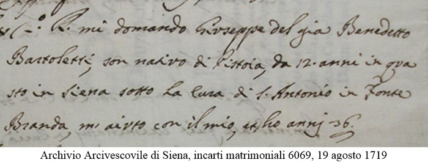

|
|
 |
9 luglio 1684
domenica
|
- prima di iniziare la lettura, si consiglia di leggere l'introduzione -
Conseguenza della venuta a Siena del principe Francesco Maria de’ Medici, che avrebbe dovuto presenziare alla cerimonia di consegna ai Padri Carmelitani Scalzi della Chiesa di San Michele Arcangelo, detta dell’Abbadia1, il Palio che si sarebbe dovuto correre il consueto 2 luglio venne posticipato di una settimana.
Oltre che dal Macchi, dimostratosi ancora una volta preciso quando tratta gli avvenimenti di questo periodo, troviamo conferma dell’inusuale data in una lettera scritta di pugno da Cosimo Useppi il giorno 10, il quale ci informa che “hieri si corse co’ cavalli un’ bel Palio in Piazza, differitosi tal giorno perché S.A. lo godesse, si come ci hebbe gusto”2.
Fra le dieci partecipanti3, vi furono l’Oca, la Torre, l’Istrice e l’Onda, fiera di avere fra gli spettatori il suo Protettore, Don Agostino Chigi.
Fu una carriera costellata da molte cadute4 che il Comune e la maggioranza degli storici settecenteschi sono concordi nel conferire alla Torre, mentre permangono sostanziali divergenze sul fantino vittorioso.
Il Bandiera e il Gagliardi sono per Granchio, altri propendono per il pistoiese Strega5, ignorando che era nato intorno al 16836.
La storia paliesca del 1684 ricorda pure che il 31 dicembre un accordo stipulato fra il Nicchio e la Compagnia di Santo Stefano, aveva sancito la restituzione di tutti i Palii che in passato custodiva la suddetta confraternita7, in modo che si "intendino terminate, finite et estinte tutte le controvertie e differenze seguite e tutte le pretensioni che una parte havesse con l'altra8.
Forse sarà stata una pura coincidenza, ma dopo aver risolto questo dissidio, il Nicchio tornò alla vittoria solo nel 1731, probabilmente non potendo più contare sull'apporto economico della Compagnia.
Nel mese di settembre era stato corso anche un Palio a Cetinale e ad aggiudicarselo fu l'Onda che il 4 agosto 1686 decise di venderlo a favore dell'Oratorio9.

NOTE:
[1] BCS, A.XI.22, Girolamo Macchi, Diario, ms, c. 78
[2] ASS, Governatore 475, minute di lettere dal 1683 al 1685, 10 luglio 1684, c.s.n.
[3] ASS, Ospedale S.Maria della Scala 183, Ricordi e memorie 1453-1765, Tomo II, ms, c. 113
[4] A.VI.47, Relazione delle Rappresentanze, Spettacoli e Comparse fatte dalle Contrade ecc., anonimo, ms, p.122
[5] Di professione vetturino, stabilitosi a Siena in Fontebranda nel 1708, a Giuseppe Maria Bartaletti detto Strega vengono erroneamente attribuite alcune vittorie di Palii corsi sul finire del Seicento. E' invece plausibile che colui che vinse queste carriere fosse stato suo padre Benedetto, soprannominato Stregone.
[6] AAS, 6081 Incarti Matrimoniali, anno 1730, c.s.n
[7] ASS, Patrimonio Resti 1724, Compagnia di S.Stefano, cc. 264v 265 e 83v
[8] ACNi, Ricordi e Deliberazioni della Nobile Contrada del Nicchio 1682-1706, c. 12v quinto
[9] ACOn, Deliberationi della Contrada dell'Onda 1674-1718, c. 30v

ABBREVIAZIONI BIBLIOGRAFICHE


RIEPILOGO
VITTORIE
DAL 1633
AL 1691

|
|
|